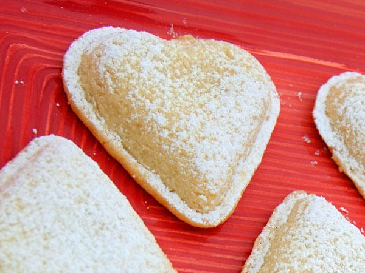

Jennifers smaker

Vaniljhjärtan
Du behöver:
- 4 dl vetemjöl
- 1 dl potatismjöl
- 0,75 dl socker
- 1 äggula
- 200 g smör
Fyllning:
- 1 ägg
- 1 msk socker
- 0,75 msk potatismjöl
- 2 dl mjölk
- 1 msk vaniljsocker
Garnering
- florsocker
Gör så här
- Smörj hjärtformar av metall väl.
- Blanda vetemjöl, potatismjöl, socker, äggula och smör till en smidig deg.
Låt degen ligga inlindad i plastfolie ca 30 minuter i kylskåpet.
- Förbered fyllningen
Blanda ägget, sockret, potatismjölet och mjölken i en kastrull.
Sjud under vispning på svag värme tills krämen tjocknar. Låt den kallna.
Smaksätt den med vanilj.
- Gör hjärtan
Kavla ut degen till en ganska tjock platta.
Klä formarna med drygt hälften av degen. Lägg en klick kräm i varje form.
Täck dem med lock av degen. Kläm till degen väl runt kanterna.
- Grädda kakorna på galler i nedre delen av ugnen i 200 grader, ca 15 minuter.
Stjälp försiktigt upp kakorna på plant underlag medan de ännu är varma.
Sikta över lite florsocker strax innan de ska serveras.